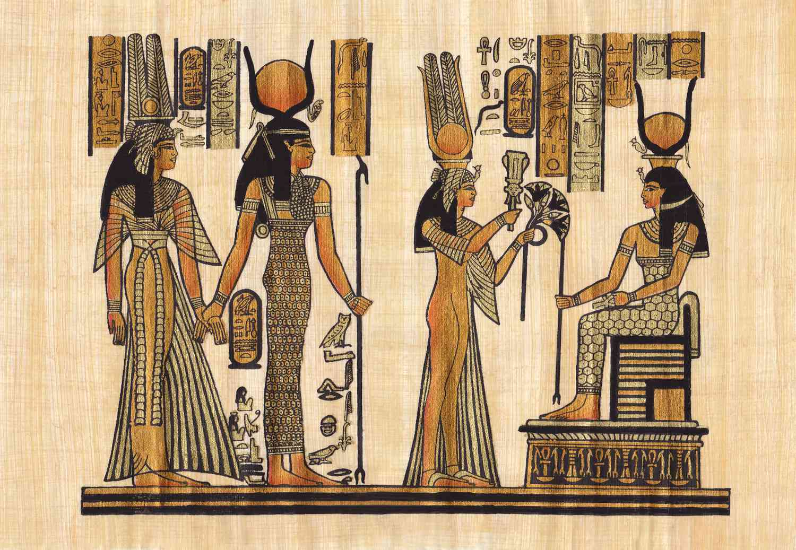
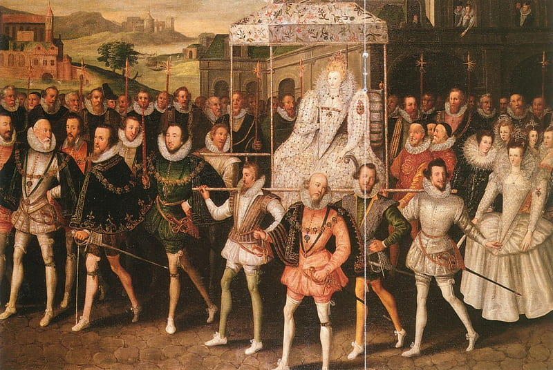
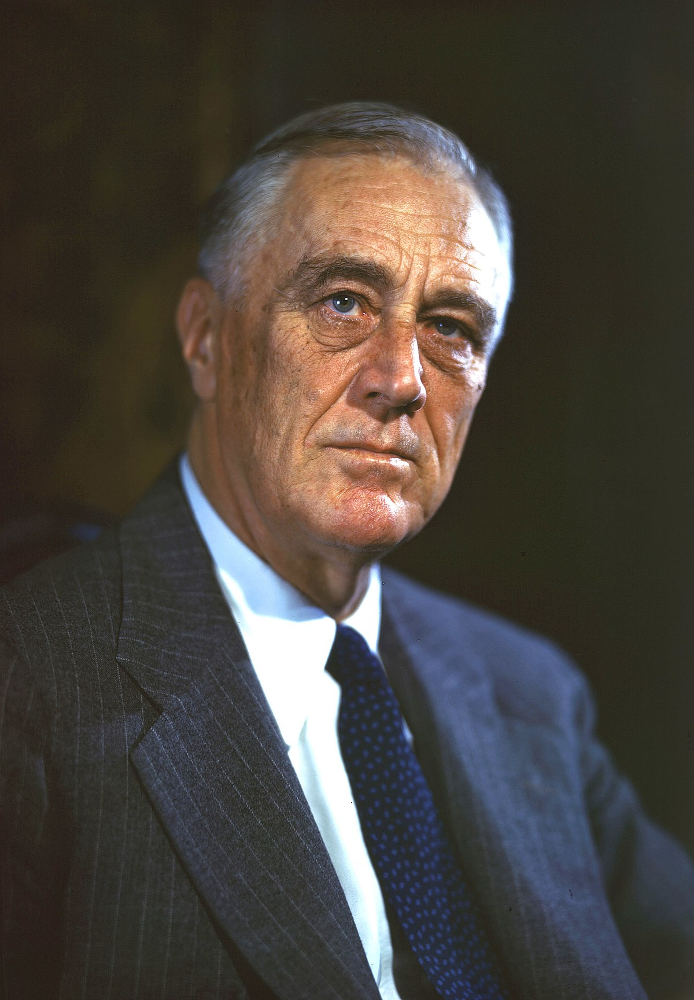
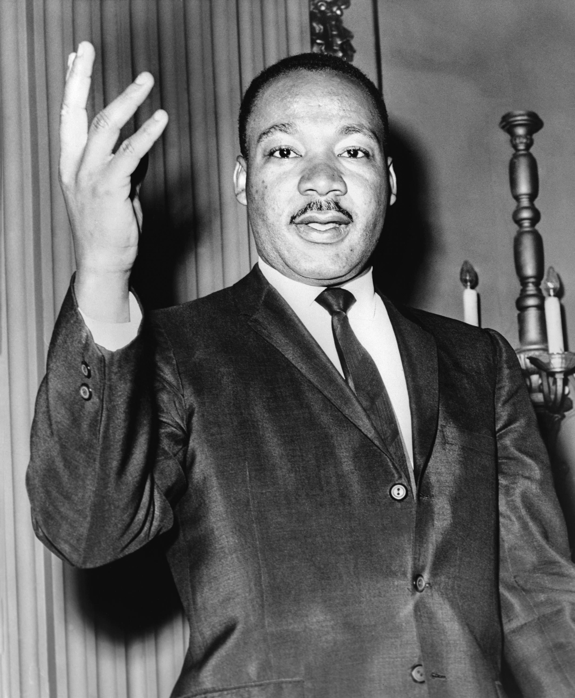
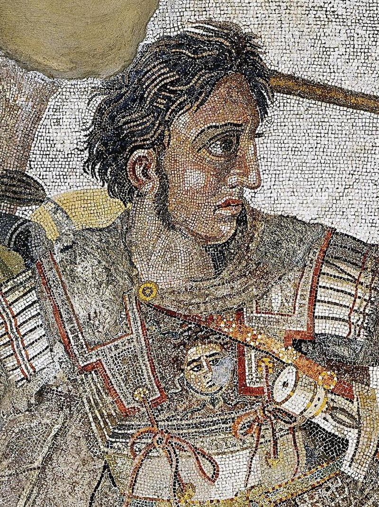
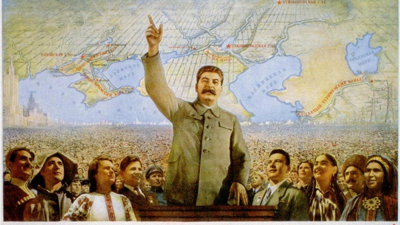
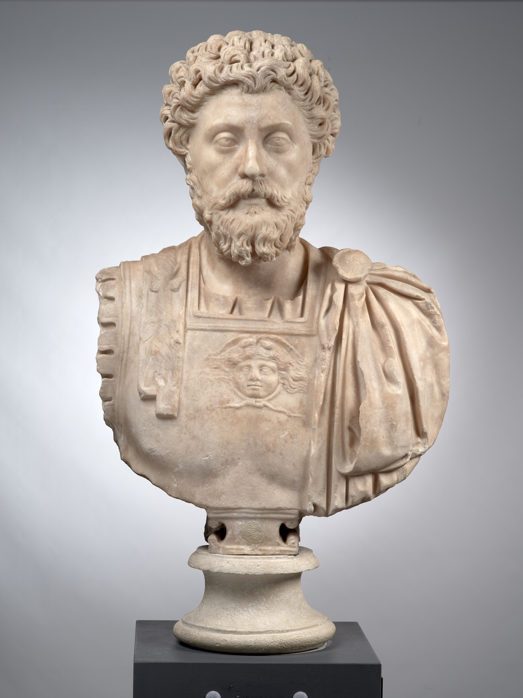
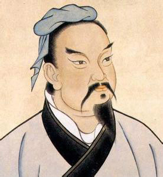
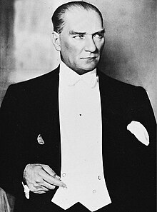

Winston Churchill – The Thoughtful Statesman
Widely regarded as one of the greatest wartime leaders, Winston Churchill’s indomitable spirit and eloquent oratory inspired a nation during its darkest hours. His leadership style was rooted in resilience, strategic foresight, and a deep conviction in the power of words to mobilize people.
Churchill not only led Britain through the adversity of World War II but also left behind a legacy of perseverance and diplomacy that continues to influence political leaders around the world.
- Born: 1874, Blenheim Palace, England
- Key Achievements: Led Britain as Prime Minister during WWII, Nobel Prize in Literature, pivotal in founding the United Nations
- Famous Quote: "Success is not final, failure is not fatal: it is the courage to continue that counts."
- Leadership Traits: Tenacity, eloquence, vision, adaptability
- Legacy: Symbol of resistance against tyranny, inspiration for democratic leadership
Churchill’s wit, literary prowess, and ability to rally people in times of crisis made him a global icon. His speeches, such as "We shall fight on the beaches," remain some of the most powerful in history. Beyond politics, he was also a prolific writer and painter.
Find out more about him

Cyrus the Great – The Just Conqueror
Revered as the founder of the Achaemenid Empire, Cyrus the Great combined military brilliance with a profound sense of justice and tolerance. His leadership redefined empire-building through respect for diverse cultures, religions, and traditions within his realm.
Cyrus’s legacy is enshrined in the Cyrus Cylinder, often hailed as the first charter of human rights. His enlightened rule laid the foundations for governance based on compassion, fairness, and unity—principles that continue to resonate in modern leadership.
- Born: c. 600 BC, Anshan, Persia
- Key Achievements: Founded the largest empire the world had seen, liberated the Jews from Babylonian captivity
- Famous Quote: "I am Cyrus, king of the world, great king, mighty king."
- Leadership Traits: Tolerance, justice, strategic vision, inclusivity
- Legacy: Model for benevolent rule, admired by both ancient and modern historians
Cyrus’s policies of tolerance and respect for local customs set a new standard for rulers. His empire stretched from the Mediterranean to the Indus Valley, and his governance influenced future empires, including Rome and Alexander the Great’s conquests.
Find out more about him
Prophet Muhammad – The Messenger of Islam
Prophet Muhammad’s teachings laid the foundation of one of the world’s major religions, uniting tribes across Arabia under a shared spiritual and ethical vision.
Revered by over a billion Muslims, his life and message continue to shape faith, law, and culture worldwide.
- Born: c. 570 CE, Mecca, Arabia
- Key Achievements: Founder of Islam, united the Arabian Peninsula, established the Constitution of Medina
- Famous Quote: "The best among you are those who have the best manners and character."
- Leadership Traits: Compassion, wisdom, humility, justice
- Legacy: Spiritual and political leader, model for ethical conduct and social reform
Muhammad’s leadership transformed a fragmented society into a unified community. His emphasis on social justice, charity, and education continues to influence billions. The Quran, revealed to him, is considered the literal word of God by Muslims.
Find out more about him
Jesus of Nazareth – The Spiritual Revolutionary
Jesus preached compassion, forgiveness, and love, inspiring a movement that would grow into one of the largest religions on Earth.
His teachings, parables, and sacrifice have left an enduring legacy in theology, philosophy, and global culture.
- Born: c. 4 BC, Bethlehem
- Key Achievements: Founder of Christianity, Sermon on the Mount, parables that shaped Western ethics
- Famous Quote: "Love your neighbor as yourself."
- Leadership Traits: Empathy, humility, courage, vision
- Legacy: Central figure in Christianity, symbol of self-sacrifice and redemption
Jesus’s message of unconditional love and forgiveness challenged the status quo. His crucifixion and resurrection are foundational events for Christians, and his influence extends to art, literature, and human rights movements.
Find out more about him

Cleopatra – The Last Pharaoh of Egypt
Intelligent and politically astute, Cleopatra ruled Egypt at a time of great turmoil, forging powerful alliances with Rome’s most influential leaders.
Her reign remains a symbol of charm, strategy, and fierce sovereignty in a male-dominated world.
- Born: 69 BC, Alexandria, Egypt
- Key Achievements: Last active ruler of the Ptolemaic Kingdom, alliances with Julius Caesar and Mark Antony
- Famous Quote: "I will not be triumphed over."
- Leadership Traits: Intelligence, charisma, political acumen, resilience
- Legacy: Icon of female power, subject of countless works of art and literature
Cleopatra’s legacy endures as a symbol of female leadership and political savvy. Her life and reign have inspired generations, and her story is retold in plays, films, and books worldwide.
Find out more about her

Elizabeth I – The Virgin Queen
Elizabeth I’s era brought relative peace, cultural revival, and global exploration to England after decades of turmoil and uncertainty.
Her reign defined a golden age of English history, guided by resilience, intellect, and a fiercely independent spirit.
- Born: 1533, Greenwich, England
- Key Achievements: Defeated the Spanish Armada, fostered the English Renaissance, established Protestantism
- Famous Quote: "Though the sex to which I belong is considered weak you will nevertheless find me a rock that bends to no wind."
- Leadership Traits: Intelligence, diplomacy, independence, charisma
- Legacy: The Elizabethan Age, symbol of strong female rule
Elizabeth I’s leadership style was marked by caution and shrewdness. She never married, using her single status as a diplomatic tool, and her reign is remembered for stability and flourishing arts.
Find out more about her
Salahudin – The Noble Warrior
Salahudin united the Muslim world and reclaimed Jerusalem during the Crusades with strategic brilliance and moral integrity admired by both allies and enemies.
A symbol of honor and leadership, he remains a revered figure in Islamic and world history.
- Born: 1137, Tikrit, Iraq
- Key Achievements: Founder of the Ayyubid dynasty, recaptured Jerusalem in 1187
- Famous Quote: "Nothing hurts me except for the loss of Jerusalem."
- Leadership Traits: Chivalry, justice, humility, military genius
- Legacy: Admired by both Muslims and Christians for his honor and mercy
Salahudin’s reputation for fairness and generosity, even to his enemies, set him apart as a model of ethical leadership in warfare and governance.
Find out more about him

Lenin – The Charismatic Orator
As the architect of the Soviet Revolution, Lenin transformed the political landscape of his time. His ability to articulate the vision for a new social order and mobilize millions was unparalleled. Through radical ideas and strategic propaganda, Lenin redefined the concept of leadership in a revolution.
His legacy is a subject of intense debate, yet his influence on political thought and leadership remains indisputable.
- Born: 1870, Simbirsk, Russia
- Key Achievements: Led the Bolshevik Revolution, established the Soviet Union, introduced New Economic Policy
- Famous Quote: "There are decades where nothing happens; and there are weeks where decades happen."
- Leadership Traits: Charisma, strategic thinking, ideological commitment, oratory
- Legacy: Founder of Soviet communism, controversial figure in world history
Lenin’s leadership style was marked by decisiveness and adaptability. His writings and revolutionary tactics influenced leftist movements worldwide, and his image remains a symbol of radical change.
Find out more about him

Abraham Lincoln – The Pragmatic Diplomat
Known for his steady resolve and moral clarity, Abraham Lincoln led the United States through its greatest internal crisis—the Civil War. His ability to maintain unity and his commitment to equality have made him a timeless symbol of leadership and justice.
Lincoln’s legacy teaches us the importance of compromise, empathy, and the pursuit of liberty in the face of division.
- Born: 1809, Kentucky, USA
- Key Achievements: Preserved the Union, abolished slavery (Emancipation Proclamation), delivered the Gettysburg Address
- Famous Quote: "Government of the people, by the people, for the people, shall not perish from the Earth."
- Leadership Traits: Integrity, empathy, pragmatism, resilience
- Legacy: Icon of democracy and equality, inspiration for civil rights movements
Lincoln’s humble origins and self-taught background shaped his leadership. His assassination made him a martyr for freedom and unity, and his speeches are still studied for their wisdom and clarity.
Find out more about him

Franklin D. Roosevelt – The Dynamic Reformer
Franklin D. Roosevelt’s innovative policies and charismatic leadership transformed the United States during the Great Depression and World War II. His New Deal programs redefined the role of government in society while his crisis management strategies provided hope to millions.
FDR’s enduring legacy is evident in his commitment to social welfare, economic reform, and his forward-thinking vision that continues to inspire modern policymakers.
- Born: 1882, Hyde Park, New York, USA
- Key Achievements: Four-term U.S. President, New Deal, led U.S. through WWII
- Famous Quote: "The only thing we have to fear is fear itself."
- Leadership Traits: Optimism, adaptability, communication, innovation
- Legacy: Architect of modern American liberalism, expanded federal government’s role
Despite being paralyzed by polio, FDR’s resilience and optimism inspired a nation. His fireside chats and bold reforms helped restore public confidence during turbulent times.
Find out more about him
Adolf Hitler – A Dictator’s Warning
Adolf Hitler led a violent totalitarian regime responsible for genocide, war, and immeasurable suffering. His rise shows how demagoguery, propaganda, and hate can dismantle institutions and devastate societies.
This entry is included strictly as a cautionary example: leadership without ethics becomes catastrophic. Understanding how it happened helps protect human rights and pluralist democracy.
- Born: 1889, Braunau am Inn, Austria
- Notoriety: Dictatorship of Nazi Germany, instigated World War II, Holocaust and crimes against humanity
- Key Warnings: Demagoguery, dehumanization, unchecked power, dismantling of democratic norms
- Legacy: Global symbol of extremism and atrocity; a reminder to resist hate and defend democracy
Never to be emulated, Hitler’s dictatorship underscores the need for ethical leadership, accountability, and protection of minorities.
Learn the historical facts

Ashoka the Great – The Enlightened Sovereign
Ashoka the Great transformed from a formidable conqueror into a proponent of peace and compassion. His embrace of Buddhism and his commitment to non-violence reshaped his empire and left a legacy defined by humanitarian ideals.
His reign is studied for its pioneering approach to governance—a blend of military might tempered by benevolent administration.
- Born: c. 304 BC, Pataliputra, India
- Key Achievements: Expanded the Mauryan Empire, promoted Buddhism, built stupas and pillars
- Famous Quote: "All men are my children."
- Leadership Traits: Compassion, reform, vision, tolerance
- Legacy: Model of moral governance, spread of Buddhism across Asia
Ashoka’s edicts, inscribed on pillars throughout his empire, promoted ethical conduct and religious tolerance, influencing generations of rulers in India and beyond.
Find out more about him
Mahatma Gandhi – The Compassionate Reformer
Mahatma Gandhi led a non-violent revolution that not only freed India from colonial rule but also inspired civil rights movements around the globe. His philosophy of Satyagraha, or truth-force, continues to be a guiding principle for peaceful protest and ethical leadership.
Gandhi’s life is a testament to the idea that true power lies in compassion, unity, and unwavering commitment to justice.
- Born: 1869, Porbandar, India
- Key Achievements: Led India’s independence movement, Salt March, promoted non-violence
- Famous Quote: "Be the change that you wish to see in the world."
- Leadership Traits: Non-violence, humility, resilience, vision
- Legacy: Inspiration for civil rights leaders worldwide, symbol of peaceful resistance
Gandhi’s methods influenced leaders like Martin Luther King Jr. and Nelson Mandela. His simple lifestyle and spiritual depth made him a revered figure in India and abroad.
Find out more about him
Mikhail Gorbachev – The Innovative Visionary
Mikhail Gorbachev’s reforms, particularly glasnost and perestroika, marked a historic turning point in global politics by opening up the closed systems of the Soviet era. His willingness to embrace change and challenge established norms illustrates the power of adaptive leadership.
Gorbachev’s legacy is one of transformation, where the courage to reform led to a new era of openness and international cooperation.
- Born: 1931, Privolnoye, Russia
- Key Achievements: Last leader of the Soviet Union, introduced glasnost and perestroika, ended the Cold War
- Famous Quote: "If not now, when? If not us, who?"
- Leadership Traits: Reform, openness, courage, diplomacy
- Legacy: Helped end the Cold War, Nobel Peace Prize, oversaw peaceful dissolution of the USSR
Gorbachev’s openness to reform and dialogue with the West changed the course of world history, making him a respected figure internationally.
Find out more about him

Genghis Khan – The Iron Fist
Genghis Khan redefined the concept of leadership through his relentless conquests and innovative military tactics. His ability to unite a multitude of tribes into a single formidable force and his strategic acumen set the standard for military leadership.
Despite his reputation for brutality, Khan’s legacy also reflects the effectiveness of decisive, uncompromising action in times of conflict.
- Born: c. 1162, Delüün Boldog, Mongolia
- Key Achievements: Founded the Mongol Empire, conquered vast territories, promoted trade and communication
- Famous Quote: "If you’re afraid – don’t do it, – if you’re doing it – don’t be afraid!"
- Leadership Traits: Ruthlessness, innovation, unity, adaptability
- Legacy: Largest contiguous empire in history, reshaped Eurasia
Genghis Khan’s legacy is complex—he is seen as both a brutal conqueror and a unifier who promoted meritocracy and religious tolerance within his empire.
Find out more about him

Augustus Caesar – The Imperial Architect
As the first Roman Emperor, Augustus Caesar laid the foundation for the Roman Empire. His reign ushered in the Pax Romana, a period of unprecedented peace and prosperity.
Augustus exemplified a leadership style rooted in reform, stability, and institutional resilience that set the tone for centuries of governance.
- Born: 63 BC, Rome, Italy
- Key Achievements: First Roman Emperor, initiated Pax Romana, major building projects
- Famous Quote: "I found Rome a city of bricks and left it a city of marble."
- Leadership Traits: Vision, reform, diplomacy, stability
- Legacy: Founder of the Roman Empire, model for future emperors
Augustus’s reforms in administration, finance, and the military ensured Rome’s dominance for centuries. His legacy is visible in the city’s monuments and the empire’s enduring influence.
Find out more about him
Julius Caesar – The Ambitious Strategist
Julius Caesar was a brilliant general and shrewd political leader who expanded the Roman Republic and challenged its foundational systems. His bold decisions and reforms reshaped Rome.
Though his rule ended in assassination, Caesar’s legacy is one of vision, decisiveness, and transformation.
- Born: 100 BC, Rome, Italy
- Key Achievements: Conquered Gaul, initiated calendar reform, centralized power in Rome
- Famous Quote: "Veni, vidi, vici." ("I came, I saw, I conquered.")
- Leadership Traits: Ambition, strategy, charisma, reform
- Legacy: Ended the Roman Republic, paved the way for the Roman Empire
Caesar’s military genius and political reforms left a lasting mark on Rome and Western civilization. His life and death have inspired countless works of literature and drama.
Find out more about him
Nelson Mandela – The Unifying Peacemaker
Nelson Mandela's lifelong fight against apartheid and his presidency symbolized reconciliation and unity. His leadership was defined by forgiveness, integrity, and an unwavering belief in equality.
Mandela's influence transcends South Africa, serving as a global emblem of moral leadership and peaceful resistance.
- Born: 1918, Mvezo, South Africa
- Key Achievements: Led anti-apartheid movement, first Black President of South Africa, Nobel Peace Prize
- Famous Quote: "It always seems impossible until it’s done."
- Leadership Traits: Forgiveness, resilience, vision, humility
- Legacy: Symbol of reconciliation, global human rights icon
Mandela’s 27 years in prison did not diminish his resolve. His presidency and post-apartheid policies set a standard for peaceful transition and inclusive governance.
Find out more about him

Martin Luther King Jr. – The Dream Bearer
A powerful voice for civil rights, Martin Luther King Jr. led a movement grounded in non-violence, justice, and hope. His speeches and activism reshaped America's social conscience.
His legacy is a beacon for equality and the belief that love and justice must guide leadership.
- Born: 1929, Atlanta, Georgia, USA
- Key Achievements: Led U.S. civil rights movement, "I Have a Dream" speech, Nobel Peace Prize
- Famous Quote: "Injustice anywhere is a threat to justice everywhere."
- Leadership Traits: Non-violence, courage, vision, eloquence
- Legacy: Icon of civil rights, inspiration for social justice movements
King’s advocacy for non-violent protest and his powerful oratory changed the course of American history. His birthday is now a national holiday in the U.S.
Find out more about him

Alexander the Great – The Conquering Visionary
Alexander the Great built one of the largest empires in history by the age of thirty. His tactical genius and ambition forged a new era of Hellenistic culture and influence.
His leadership was driven by bold strategy, innovation, and a relentless pursuit of greatness.
- Born: 356 BC, Pella, Macedonia
- Key Achievements: Conquered Persia, Egypt, and parts of India, spread Hellenistic culture
- Famous Quote: "There is nothing impossible to him who will try."
- Leadership Traits: Ambition, strategy, charisma, innovation
- Legacy: Spread of Greek culture, military legend
Alexander’s campaigns changed the map of the ancient world. His legend endures as a symbol of youthful ambition and military brilliance.
Find out more about him

Joseph Stalin – The Iron Autocrat
Stalin's rule over the Soviet Union was marked by rapid industrialization and brutal authoritarian control. He transformed the USSR into a superpower at immense human cost.
Controversial and complex, his leadership legacy is a stark example of the impact of centralized power and ideological extremism.
- Born: 1878, Gori, Georgia
- Key Achievements: Led USSR through WWII, industrialization, collectivization, expanded Soviet influence
- Famous Quote: "A single death is a tragedy; a million deaths is a statistic."
- Leadership Traits: Ruthlessness, strategy, control, propaganda
- Legacy: Superpower status for USSR, responsible for millions of deaths
Stalin’s legacy is deeply controversial—admired for his role in defeating Nazi Germany, but condemned for his purges and repressive regime.
Find out more about him

Marcus Aurelius – The Watchful Guardian
Marcus Aurelius is remembered for his stoic philosophy and his dedication to duty and moral integrity. His writings offer a rare glimpse into the mind of a ruler who balanced the burdens of power with personal reflection and ethical responsibility.
His lessons on self-discipline, the impermanence of life, and the importance of compassion remain influential in both philosophy and modern leadership studies.
- Born: 121 AD, Rome, Italy
- Key Achievements: Roman Emperor, author of "Meditations", maintained stability during wars
- Famous Quote: "You have power over your mind – not outside events. Realize this, and you will find strength."
- Leadership Traits: Wisdom, stoicism, self-discipline, humility
- Legacy: Philosopher-king, model of ethical leadership
Marcus Aurelius’s "Meditations" is still widely read for its insights into leadership and personal growth, making him a timeless figure in both philosophy and governance.
Find out more about him

Sun Tzu – The Elite Strategist
Sun Tzu’s treatise, "The Art of War," transcends time, offering strategies that are still referenced in business, sports, and politics today. His emphasis on intelligence, adaptability, and the element of surprise exemplifies a strategic mindset that is essential for leadership in any era.
As a master tactician, his philosophies provide profound lessons on preparation, risk management, and the importance of understanding both one’s own strengths and those of one’s adversaries.
- Born: c. 544 BC, China
- Key Achievements: Author of "The Art of War", military strategist, influenced Chinese and global warfare
- Famous Quote: "All warfare is based on deception."
- Leadership Traits: Strategy, adaptability, intelligence, foresight
- Legacy: Timeless military wisdom, influence on leaders worldwide
Sun Tzu’s principles are applied far beyond the battlefield, shaping approaches to competition and conflict resolution in many fields.
Find out more about him

Mustafa Kemal Atatürk – The Enlightened Visionary
Atatürk’s revolutionary reforms modernized Turkey and set a precedent for secular governance and progressive social policies. His insistence on education, national sovereignty, and modernization reshaped an entire nation, leaving a legacy that continues to serve as a benchmark for transformative leadership.
Atatürk’s vision of a contemporary state exemplifies how bold, thoughtful reforms can lead a nation toward a brighter future.
- Born: 1881, Salonica, Ottoman Empire (now Thessaloniki, Greece)
- Key Achievements: Founder of modern Turkey, abolished the Ottoman sultanate, introduced sweeping reforms
- Famous Quote: "Peace at home, peace in the world."
- Leadership Traits: Vision, reform, secularism, determination
- Legacy: Modern, secular Turkish state, inspiration for reformers
Atatürk’s reforms in education, law, and culture transformed Turkish society and set a model for modernization in the Muslim world.
Find out more about him
Che Guevara – The Revolutionary Firestarter
Che Guevara’s iconic image stands as a symbol of rebellion and radical change. His unwavering commitment to overturning oppressive systems and empowering the marginalized has inspired generations of activists and revolutionaries.
Guevara’s life reminds us that leadership is not always about consensus—it can also be about challenging the status quo with passion and purpose.
- Born: 1928, Rosario, Argentina
- Key Achievements: Key figure in Cuban Revolution, guerrilla leader, author of "Guerrilla Warfare"
- Famous Quote: "The revolution is not an apple that falls when it is ripe. You have to make it fall."
- Leadership Traits: Passion, courage, idealism, resilience
- Legacy: Icon of rebellion, inspiration for social justice movements
Che’s legacy is complex—admired for his dedication to the oppressed, but also criticized for his methods. His image remains a global symbol of resistance.
Find out more about him